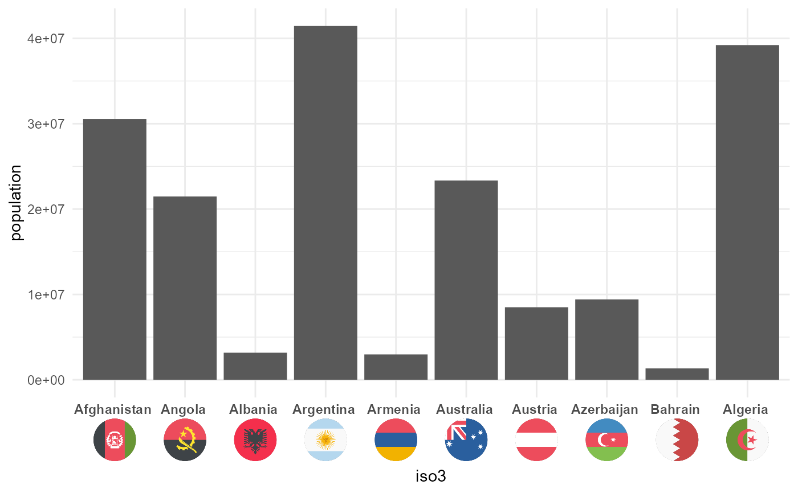

geom_axis_flags.RdAdd X-Axis flags to ggplots
geom_axis_flags( breaks, labels, country_icons, width = 50, lineheight = 3, fontface = "bold", ... )
| breaks | x axis breaks |
|---|---|
| labels | vector of labels to depict |
| country_icons | country for which flag to depict, in capital letter ISO-3 format (e.g. DEU for Germany) |
| width | width of the flag, defaults to 50 |
| lineheight | height of the axis label line |
| fontface | Font Face for Labels, defaults to "bold" |
adds x axis flags to ggplot
You must not call a ggplot theme after the call of geom_axis_flags, otherwise the theme parameter necessary for flag rendering will be overwritten.
Flags are under CC-BY licence and are obtained from: https://github.com/eosrei/emojione-color-font
options(tidyverse.quiet = TRUE) library(tidyverse) library(ggoxford) library(ggtext) wpop2013 <- tidyr::population %>% filter(year == 2013) %>% filter(population > 1e6) %>% mutate(iso3 = countrycode::countrycode(country, origin = "country.name.en", destination = "iso3c") ) %>% slice(1:10) head(wpop2013,10)#> # A tibble: 10 x 4 #> country year population iso3 #> <chr> <int> <int> <chr> #> 1 Afghanistan 2013 30551674 AFG #> 2 Albania 2013 3173271 ALB #> 3 Algeria 2013 39208194 DZA #> 4 Angola 2013 21471618 AGO #> 5 Argentina 2013 41446246 ARG #> 6 Armenia 2013 2976566 ARM #> 7 Australia 2013 23342553 AUS #> 8 Austria 2013 8495145 AUT #> 9 Azerbaijan 2013 9413420 AZE #> 10 Bahrain 2013 1332171 BHRggplot(data = wpop2013 , aes(x = iso3, y = population)) + geom_bar(stat = "identity") + theme_minimal() + geom_axis_flags(breaks = wpop2013$iso3, labels = wpop2013$country, country_icons = wpop2013$iso3, width = 30, lineheight = 2, fontface = "bold" )